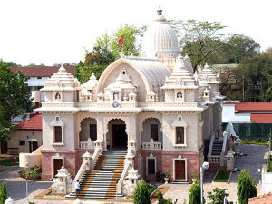

Nagpur
आत्मनो मोक्षार्थं जगद्धिताय च
“जीवन-विकास” - मराठी मासिक
‘आत्मनो मोक्षार्थं जगद्धिताय च’ - ‘आत्म्याच्या मुक्त्तीसाठी आणि जगताच्या हितासाठी’ - हे रामकृष्ण मठ व रामकृष्ण मिशनचे प्रसिद्ध घोषवाक्य स्वतः स्वामी विवेकानंदांनी मठ व मिशनच्या स्थापनेप्रसंगी दिलेले आहे. १८९७ला रामकृष्ण संघाची रीतसर स्थापना होऊन आजमितीस सुमारे ११७ वर्षे उलटली आहेत. रामकृष्ण संघाचे जगद्व्यापी कार्य सर्व दृष्टीने आणि सर्वांगाने वृद्धिंगत होत आहे. ‘रामकृष्ण मठ, नागपूर’ ही रामकृष्ण मठ व रामकृष्ण मिशन, बेलुर मठाचे (प. बं. ) एक अधिकृत शाखाकेंद्र आहे. या मठाची स्थापना १९२७ मधे प. पू. स्वामी शिवानंदजी महाराज, द्वितीय महाध्यक्ष, रामकृष्ण संघ यांच्या परमपावन हस्ते झाली. त्यावेळी अत्यंत लहान स्वरूपात सुरू झालेले येथील कार्य आता प्रचंड वाढले आहे. या मठाचे प्रथम अध्यक्ष प. पू. स्वामी भास्करेश्वरानंदजी महाराज, त्यानंतर पू. स्वामी व्योमरूपानंदजी महाराज व आता पू. स्वामी ब्रह्मस्थानंदजी महाराज यांच्या सुयोग्य मार्गदर्शनाखाली बहुविध अंगांनी मठाचे कार्य वाढतच आहे. श्रीरामकृष्णदेवांचे विशाल मंदिर, प्रकाशन विभाग (हिंदी व मराठी), विवेकानंद विद्यार्थी भवन, सुसज्ज ग्रंथालय, चलचिकित्सालय, फिजियोथेरेपी यूनिट, होमिओपॅथी दवाखाना तसेच इतर अनेक प्रकल्प येथून चालवण्यात येतात. प्रकाशन विभागातर्फे १९५७ पासून ‘जीवन-विकास’ नावाचे मराठी मासिक प्रसिद्ध होऊ लागले. या मासिकाचे ध्येयधोरण ‘आत्मनो मोक्षार्थं जगद्धिताय च’ हेच असून मागील जवळपास ५७ वर्षांच्या कालखंडात त्याचेच प्रतिबिंब या मासिकात येणाऱ्या लेखांत आपल्याला पाहायला मिळेल. जीवन-विकासच्या मार्च १९५७च्या पहिल्याच अंकात या मासिकाचे कार्यक्षेत्र, यात येणारे लेख, निबंध यांविषयी जे वर्णन आले आहे, ते या मासिकाचे उद्दिष्ट दिशा स्पष्ट करून सांगते

“शैक्षणिक, सामाजिक, साहित्यिक प्रभृती जीवनाच्या सर्वच क्षेत्रांत आपण आपले वैयक्त्तिक, कौटुंबिक, सामाजिक नि राष्ट्रीय जीवन अशा तऱ्हेने ‘घडविले’ पाहिजे, अशा तऱ्हेने ‘जगले’ पाहिजे - त्याचा अशा तऱ्हेने “विकास” केला पाहिजे की जेणेकरून आम्हा प्रत्येकातील अंतर्मानवाचा, मानवातील त्या दिव्य अंशाचा, मानवाच्या खऱ्या ‘स्व’-रूपाचा, मानवाच्या आत्म्याचा “प्रकाश” प्रकट होईल. आणि असल्या “जीवन-विकासा”मुळे आपल्यात जसजसा “आत्मप्रकाश” प्रकट होईल, तसतशा आपल्या व्यष्टि-समष्टी जीवनाच्या शिक्षण, अर्थ, साहित्यादी सर्व शाखाही आपोआप अधिकाधिक पुष्ट होतील, सफलित होतील, सुफलित होतील. कारण “मूळसिंचनी सहजे, शाखा पल्लव संतोषती. ” पूज्यपाद स्वामी विवेकानंद म्हणतात, - “This infinite power of the spirit, brought to bear upon matter, evolves material development, made to act upon thought, evolves intellectuality, and made to act upon itself, makes of man a God ... Manifest the divinity within you, and everything will be harmoniously arranged around it” - “आत्म्याच्या ह्या अनंत शक्त्तीचा प्रयोग जडावर केल्यास भौतिक उन्नती होईल, बुद्धीवर केल्यास मानसिक नि बौद्धिक विकास होईल, आणि स्वतः आत्म्यावरच केल्यास आध्यात्मिक प्रगती होऊन नराचा साक्षात नारायण बनेल. . . . म्हणून स्वतःमधील हा दैवी अंश - स्वतःचे हे खरे सत्-चित्-आनंद स्वरूप जागृत करा, त्याचा प्रकाश होऊ द्या, मग जीवनाच्या सर्व अंगांची, सर्व क्षेत्रांतील उन्नती आपोआप, संघर्षाखेरीज साधेल.”
“तरच आपल्या जीवनाच्या ह्या विविध क्षेत्रांमध्ये जे संघर्ष थैमान घालीत आहेत, जे भयावह अराजक माजले आहे, जो अकल्पनीय आशाभंग, असंतोष नि असमाधान उतू येत आहेत, स्त्री-पुरुष, शिक्षक-विद्यार्थी यांच्या जीवनात नि परस्पर संबंधात जी लाजिरवाणी गढुळता निर्माण झाली आहे, त्या साऱ्याला हळूहळू आळा बसेल. सर्वत्र पसरलेले अशुभाशिव-अमंगल निमून आपले व्यष्टि-समष्टी जीवन हळूहळू सत्य-शिव-सुंदर, मंगलमय होईल. “आधुनिकते”ने दिलेल्या शापांचा निरास होऊन आपले जीवन आपल्याला नि समस्त जगताला महन्मंगल वरदान ठरेल.
“हिंदूंच्या समग्र शास्त्रांचा निष्कर्ष काढून, भगवान श्रीरामकृष्णपदाश्रित पूज्यपाद स्वामी विवेकानंदांनी नवजगताला आशीर्वाणी ऐकविली आहे - “Each soul is potentially Divine” - “प्रत्येक जीव अव्यक्त्त ब्रह्म होय.”
“स्त्री-पुरुष सर्वांच्या ह्या अव्यक्त्त दिव्य स्व-रूपावर दृढ विश्वास, अढळ श्रद्धा ठेवून, त्यांच्या त्या यथार्थ दैवी स्वरूपाला आवाहन करण्याच्या मनीषेने आध्यात्मिक, धार्मिक, नैतिक, सांस्कृतिक, आणि त्याचप्रमाणे शैक्षणिक, सामाजिक, आर्थिक, वैज्ञानिक, साहित्यिक आदी जीवनाच्या सर्वच महत्त्वाच्या क्षेत्रांतील उच्च, विधायक जीवन-मूल्यांचा नि जीवनादर्शांचा प्रसार-पुरस्कार करणे हेच “जीवन-विकासा”चे व्रत राहील. तदनुकूल उच्च दर्जाच्या नि सुसंस्कृत अभिरुचीच्या कविता, विशिष्ट दृष्टिकोनातून लिहिलेली प्रवासवर्णने, गतकालापासून बोध घेऊन ऊर्जस्वल भावी काल घडविण्यासाठी वर्तमानात कार्यास प्रवृत्ति-प्रेरणा देणारे स्फूर्तिदायक ऐतिहासिक लेख, सर्वसाधारण वाचकांच्या आवडीला आणि नावडीला इष्ट वळण लावू शकतील असली सहृदय, अधिकृत ग्रंथपरीक्षणे इत्यादींचाही “जीवन-विकासा”त समावेश आहे.”